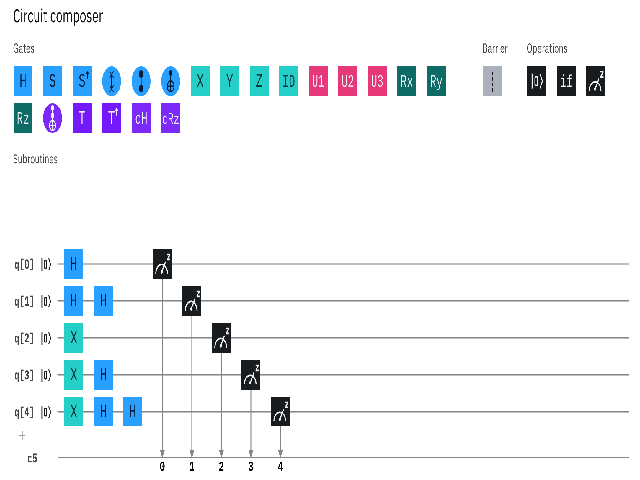

Approssimazione di una curva parametrica nello spazio con TensorFlow
Percettrone multilayer (MLP) altamente configurabile, implementato con TensorFlow, per approssimate una curva parametrica continua e limitata nello spazio con il parametro appartenente a un intervallo chiuso dei reali.
Segue...
Approssimazione di una curva parametrica nello spazio con PyTorch
Percettrone multilayer (MLP) altamente configurabile, implementato con PyTorch, per approssimate una curva parametrica continua e limitata nello spazio con il parametro appartenente a un intervallo chiuso dei reali.
Segue...
Approssimazione di una curva parametrica su un piano con TensorFlow
Percettrone multilayer (MLP) altamente configurabile, implementato con TensorFlow, per approssimate una curva parametrica continua e limitata su un piano con il parametro appartenente a un intervallo chiuso dei reali.
Segue...
Approssimazione di una curva parametrica su un piano con PyTorch
Percettrone multilayer (MLP) altamente configurabile, implementato con PyTorch, per approssimate una curva parametrica continua e limitata su un piano con il parametro appartenente a un intervallo chiuso dei reali.
Segue...
Approssimazione di una funzione di una variabile con TensorFlow
Percettrone multilayer (MLP) altamente configurabile, implementato con TensorFlow, per approssimate la curva di una funzione a valori reali continua e limitata di una variabile in un intervallo chiuso dei reali.
Segue...
Approssimazione di una funzione di una variabile con PyTorch
Percettrone multilayer (MLP) altamente configurabile, implementato con PyTorch, per approssimate una curva di una funzione reale di una variabile in un intervallo chiuso dei reali.
Segue...

Synthetic Words
Dataset di diversi file wav mono che contengono ciascuno la pronuncia di una singola parola in lingua inglese generata sinteticamente.
Utile per testare una rete neurale nello speech recognition.
More...

Porte Hadamard in cascata
Il mondo quantistico ha le proprie regole che sono diverse da quelle del mondo macroscopico
e il modo migliore per comprenderle è modellarle matematicamente con gli operatori aggiunti negli spazi di Hilbert.
More...